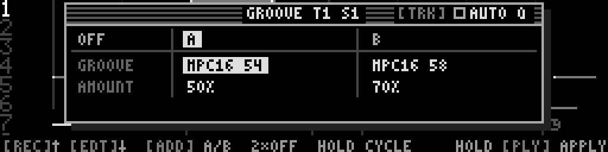

Open GROOVE on a recorded loop
Play a recorded phrase. On the supplied DROID patch, hold PLAY/STOP to open GROOVE for that slot. On a custom controller, assign a button to MIDI note number 43 on channel 16. From the performance screen you can also hold NOTELEN (note 35) and press global transport (note 39), both on channel 16.
Read OFF, A and B across the top. The highlight shows which timing you hear. OFF plays the phrase as you recorded it. A starts with the loop’s current groove. B starts with the same settings, ready for comparison. A fresh recording opens on OFF, with straight sixteenth-note quantization at 50% strength available in both A and B.

Compare two grooves
- Choose the groove. While A or OFF plays, use F3 to choose B’s groove and F4 for its strength. Try straight sixteenth notes in A and sixteenth-note swing in B. Swing delays the second sixteenth in each pair. You can prepare B while the original phrase plays.
- Compare by ear. Tap ADD (the NOTELEN button) to alternate A and B. From OFF, the first tap selects A. Double-tap to return to OFF and hear the timing you played.
- Adjust the strength. F1 chooses the groove for A and F2 sets its AMOUNT. F3 and F4 do the same for B. At 100%, each affected note starts on the nearest timing position in that groove. At 50%, it moves halfway from the start you played. To use the encoder, tap REC to move up or EDIT to move down, then turn to change the highlighted setting.
- Keep the timing you hear. Choose OFF, A or B and hold PLAY/STOP to close the window. To undo the groove changes you made during this visit, double-tap REC back on the performance screen.
A groove affects the whole loop. You can restore your recorded timing with OFF, and notes moved by hand in NOTE_EDIT keep their positions. After you release a fader, listen for the change on a beat. The dots stay dim while you adjust, move while the looper prepares the new timing, then briefly brighten when it is playing.
Compare hands-free and include new overdubs
Hold ADD to alternate two bars of A with two bars of B. The bar under the playing groove fills as the next change approaches. Tap ADD once to stay on the groove you hear, or double-tap to hear the original recording.
Tap TRK in GROOVE to switch AUTO Q on or off for this slot. With AUTO Q on and a groove selected, newly overdubbed notes take on that groove when you finish the overdub. Leave AUTO Q off to preserve the timing you play in new overdubs.